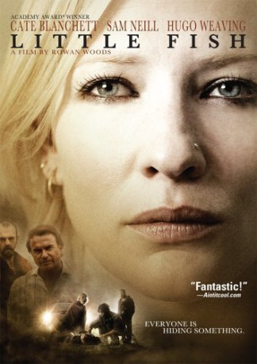

#6113 Tracys Heart - Nur mit der Liebe kann man siegen
Alternativ: Little Fish
 
 IMDB-Wertung: 6.3 / 10
IMDB-Wertung: 6.3 / 10  Metascore: 0
Metascore: 0 
In Sydney, Tracey Heart is a thirty-two years old manager of a video shop ex-addicted in heroin and clean for four years. She is trying to raise forty thousand dollars to buy a shop for computer games on the next door of the rental and become partner of her boss, but based on her negative records, the banks deny the loan. Tracey takes care of her junkie stepfather Lionel Dawson, unsuccessfully trying to make him quit his heroin habit. When her former boy-friend Jonny returns from Vancouver, Tracey's mother Janelle fears a fall of Tracey, while she blames Jonny for the car accident where her son Ray lost one leg. When Ray and Jonny associate to Moss, the assistant of the retired criminal boss Bradley 'The Jockey' Thompson, in drug dealing, Tracey is convinced by Jonny to join them and raise the necessary money for her business along the weekend.
Jahr: 2005
Dauer: 109 Minuten
FSK: 12
Land: Australien Studio: Edel Media & EntertainmentTonspuren: DD5.1 - ,
Untertitel:
Auflösung: 1080p (1912x1016) Größe: 9461 MB
Genre: Thriller, Drama, Krimi, Liebe
Regisseur: Rowan Woods
Drehbuch: Yu Wang
Soundtrack:
Darsteller:
 Cate Blanchett als Tracy
Cate Blanchett als Tracy Sam Neill als The Jockey
Sam Neill als The Jockey Hugo Weaving als Lionel
Hugo Weaving als Lionel Martin Henderson als Ray
Martin Henderson als Ray Dustin Nguyen als Jonny
Dustin Nguyen als Jonny Joel Tobeck als Moss
Joel Tobeck als Moss- Lisa McCune als Laura
- Susie Porter als Jenny
- Nina Liu als Mai
- Ferdinand Hoang als Khiem
- Jason Chong als Mingh
- Anthony Brandon Wong als Mr. Chan
- Natasha Beaumont als Tania
- Harli Ames als John
 Anthony Phelan als Michael
Anthony Phelan als Michael- Ian Roberts als Marty
- Terry Serio als Busker
- Noni Hazlehurst als Janelle
- Linda Cropper als Denise
- Daniela Farinacci als Donna
- Anh Do als Tran
- Bic Runga als Night Club Singer
- Lisa Bailey als Suzy
- Lan Tran als June
- Westley Wong als David
- Andrew Tran als Jason
- Thi Lan Nguyen als Old Nanna
- Thi Ngoc Nga Nguyen als Lei
- Penny Pederson als Real Estate Agent
- Jacqueline Mikhail als Nahal
- Steve Vella als Nick
- Rachel Aveling als Receptionist
- Georgia Emerton als Sammy
- Alex Cook als Little Tracy
- Rebecca Bell als Young Janelle
- Samuel Patterson als Little Ray
- Peter Tkacz als Young Lionel
- Lily Nguyen als Other Girl, Reunion
- John Nguyen als Boy 1
- Khiet Hoang als Waiter
- Jazz Ly als Dealer
- Sarah Woods als Teacher
- Amy Pedersen als Receptionist 2
- Stella Ha Vi Do als Woman in Video Shop
- Jon Sivewright als Footy Fan
- Rudi Tuisk als Drug Car Driver
- Jessamie Dunton-Rose als Young Girl In Pub
- Craig Forrest als Jockey's Young Man
- Igor Breakenback als Doctor , uncredited
- Michael Ienna als Clerk , uncredited
Datei: X:\2005(N-Z)\Tracys Heart - Nur mit der Liebe kann man siegen (2005, FSK12, 1912x1016).mkv seit 02.05.2017
Festplatte: HD 2005(G-Z)-2006(A-Z)
 Es gibt insgesamt 50 Filme in der Gruppe '2005(N-Z)'
Es gibt insgesamt 50 Filme in der Gruppe '2005(N-Z)'